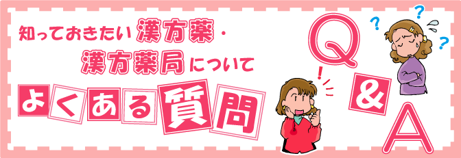

きぐすり.com は、漢方薬、女性の健康、サプリメント、ハーブの情報を専門家がやさしく解説しています。 病気の悩みを漢方で  ご質問－ よくある質問、Ｑ＆Ａをご覧いただけます。 － 小児喘息は漢方でよくなりますか？ 夏かぜに効く漢方薬はありますか？ 肌に出来た赤いプツプツした湿疹や吹き出物やニキビには、漢方薬が良く効くというのは本当ですか？ ラクナ脳梗塞の体質改善に、漢方薬が効くって本当ですか？ 生理の前後になるとイライラします。漢方がいいと聞いたのですが、本当？ 夜ぐっすり眠れず、疲れが取れなくて困っています。 耳が急に聞こえづらくなりました。漢方薬は効果がありますか？ ドライスキン（乾燥肌）に漢方薬は効果がありますか？ 肩・腕の痛み（四十肩・五十肩）に漢方は効きますか？ 記憶力の減退や不眠症などに漢方薬は効きますか？ 飛蚊症や目の疲れやカスミ目などに漢方薬は効果がありますか？ 脳梗塞の予防や脳梗塞後遺症のシビレ感に漢方薬は効きますか？ 花粉症や慢性副鼻腔炎（ちくのう症）、アレルギー性鼻炎などの鼻づまりに漢方薬は効きますか？ 子宮内膜症の酷い生理痛には漢方薬は効果がありますか？ カユミが強い湿疹やニキビによる顔と皮膚の赤みには漢方は効果がありますか？ しゃっくりに対して、漢方薬は効果がありますか？ 頭痛に対して漢方薬は効果がありますか？ 女性の更年期障害の不快な症状（ホットフラッシュ・イライラ・不眠症）に漢方薬は効果がありますか？ 「耳鳴り」は漢方で良くなりますか？ 瘀血（おけつ）って何ですか？ 教えてください。 サフランは、何に効きますか？ 便秘に漢方薬は効きますか？ 「うつ」は漢方で良くなりますか？ 更年期障害は漢方で良くなりますか？ 「冷え」は漢方薬で良くなりますか？ 「主婦湿疹」は、漢方で良くなりますか？ 子どもが欲しいのですが、できますか？ 血糖値を下げる漢方薬はありますか？ 痩せるための漢方薬はありますか？ おしっこが近いのですが漢方薬はありますか？ 咳が長引いて止まりません。このような症状に効く漢方薬はありますか？ 胃腸の不調を感じています。漢方薬は効きますか？ 更年期障害！？ 漢方薬で症状は和らぎますか？ 体がかゆくて眠れません。長い間アトピーに悩んでいます。 体質改善できる漢方薬はありますか？ 赤ちゃんが欲しくて不妊治療に通っています。漢方薬で赤ちゃんが出来やすい体質にできますか？ 秋くらいから冷えで毎年悩んでいます。冷えで眠れない事もあります。何か良い漢方はありますか？ 冷え性（冷え症）に漢方薬は効きますか？ 漢方薬は、生理痛（月経痛・月経困難症）には効果がありますか？ 更年期の【便秘に、漢方が効く】と聞きましたが、本当ですか？ 冷房による冷えがつらいです。漢方薬で改善しますか？ 口の中が苦く感じます。病気でしょうか？漢方薬は効きますか？ 汗のにおいが気になります。漢方薬で、よくなりますか？ 水虫に効く漢方薬ありますか？ 瘀血（おけつ）と女性の病気とは関係はあるのですか？ 受験シーズンにいい漢方は？ 「顔のホテリ感や顔が赤い」は、漢方薬で改善できますか？ 不眠症に効果的な漢方薬はありますか？ 汗が気になります。漢方で汗は気にならなくなりますか？ においや味が気になる漢方をうまく飲む方法はありますか？ 熱中症と日射病に効く漢方薬はありますか？ 潰瘍性大腸炎と病院で言われました。漢方でどこまで治りますか？ PMS（月経前症候群）で悩んでいます。漢方で治りますか？ 夏ばての症状に毎年悩みます。漢方薬は効きますか？ 薬膳料理の素材を探しています。漢方薬局・薬店で買えますか？ 「口の中が苦い」という症状で悩んでいます。漢方薬で治りますか？ 癌でいろんな治療で食欲も気力も体力もおちています。どうしたらいいですか？ 肩やひじ、膝が痛くて困っています。なにか漢方でありますか？ アトピー性皮膚炎で病院をめぐって治りませんが、漢方で治りますか？ ニキビで皮膚科にかかっていますが治りません。漢方で治りますか？ すでに痛い頭痛に、今飲んで効く漢方薬はありますか？ 夏にむけて 多汗症に漢方薬は効きますか？ ゆっくりご相談したいのですが？ 相談だけでもいいですか？ 漢方薬局・薬店では、ハーブを販売していますか？ 漢方相談薬局での相談には、どのくらいの時間がかかりますか？ 薬局へ行けません。送ってもらうことはできますか？ 本人が相談に行かなくてはいけませんか？ 急性の病気（風邪など）には、漢方薬は効きますか？ 花粉症には、漢方薬は効きますか？ 漢方薬は効き目が悪い気がしますが、どうですか？ 子どもでも漢方薬は飲めますか？ 漢方薬って長く飲まないと効果がない、といわれていますが…？ 市販の漢方薬は、どういう時に使えば良いの？ 食間にのむように言われましたが、なかなか続けられません…。 漢方薬はどんな形で服用するの？ 漢方薬は、高い？ 漢方薬は、どれくらいの期間、飲んだら効くの？ 漢方薬には、副作用はあるの？ 妊娠中は漢方薬はのんでも良いか？ 西洋薬を服用しているけど、漢方を併用しても大丈夫？ 煎じ薬とエキス剤のちがいを教えて下さい。